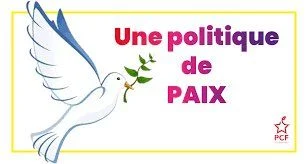

Prise de position
Face aux menaces de Donald Trump contre l’Iran, nous défendons la paix
Date indiquée par Facebook · 7 avril 2026
Repères éditoriaux
Nous condamnons les menaces de Donald Trump contre l’Iran et le recours à la guerre. Notre solidarité va aux populations qui subissent les bombardements. Nous défendons une politique de paix.
Texte conservé avec la publication
"Une civilisation entière va mourir ce soir", lance Donald Trump à quelques heures de l'expiration de son ultimatum contre l'Iran.
Cet homme est fou.
La guerre, c’est l’horreur absolue, l’anti-humanisme incarné avec ses bombes qui ne laissent au sol que des cratères de sang et de larmes, de souffrances et d’amputations, de destruction et de saccage de la nature.
Il faut en sortir, rapidement.

Sources
Archive rouge · export Facebook · AR-0002-FB-00827
À lire aussi · Le PCF condamne les bombardements contre l’Iran et appelle à un cessez-le-feu